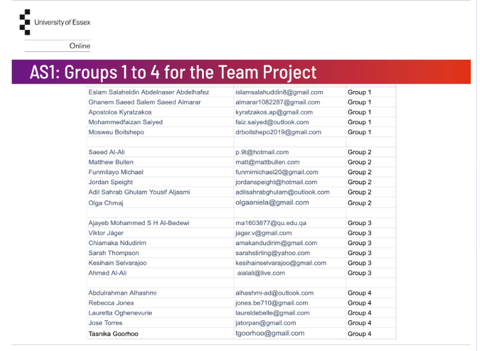
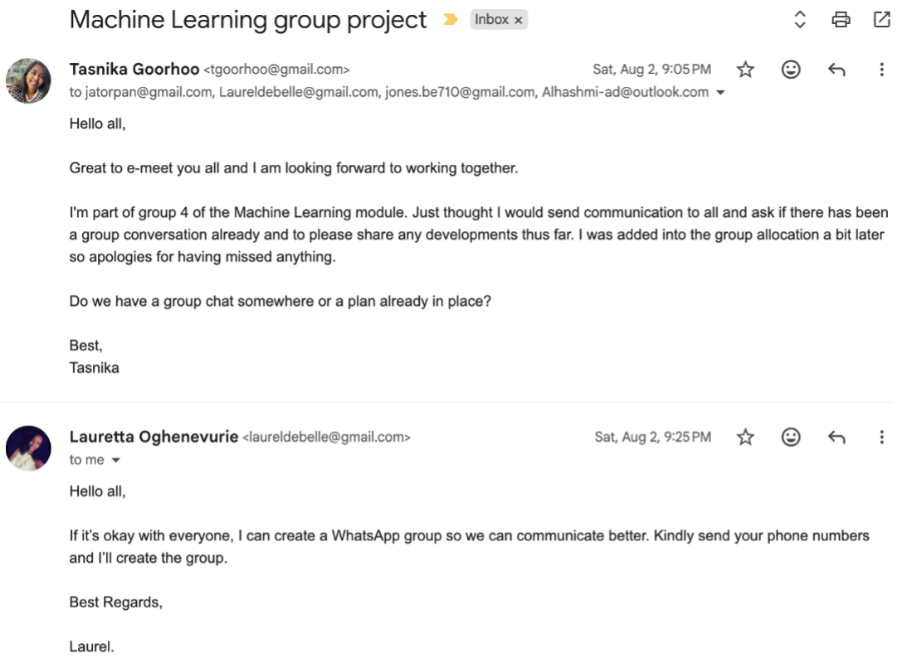

A Reflective Piece
Introduction
This reflective piece shows my journey through the Machine Learning module, highlighting the development of skills deemed important for success. The module included various elements of Machine Learning such as algorithmic principles, ethical considerations and opportunities to work in teams and collaborate (University of Essex, 2025). Through the module, I faced several challenges and opportunities for growth. In this piece I will aim to analyse my contributions to the team project, the skills I obtained, challenges I faced and, the plan to further develop in this area.
I work in the energy industry; knowledge and skills such as understanding the legal and ethical aspects are important to ensure integrity and safe use of machine learning. I also work with various teams therefore improving on related skills was important. This was a personal motivation for undertaking the module.
I make use of the Rolfe et al. (2001) model to report on my experience through this module via the questions: What? So what? Now what? Through these insights, I was able to convey my learnings, growth and explore future opportunities (University of Wollongong Australia, 2023). My aim was to notarize and illustrate my journey through this module, note the challenges and opportunities for growth, skills obtained and highlight how I plan to apply these insights.
Exploratory Areas
Technical skills
This module focused on developing technical skills in Machine Learning, including data analytics and algorithms as well as legal, ethical and social issues. By engaging with the lecture casts, like Artificial Neural Network, which provided an understanding of ANNs and how to design and develop these artefacts, this allowed me the opportunity to understand important concepts. The first and second assignments allowed me to practice the technical skills in regression and clustering, work with different datasets for machine learning algorithms, convolution neural networks, data augmentation and fine-tuning pre-trained models; this was using track 1 (Classical ML) and 2 (Deep Learning). The third assignment challenged me to work with GitHub and ensure my e-Portfolio requirements were met. Using python I engaged and improved my technical capabilities which I still find daunting after engaging with python in other modules. The concept of 'practice makes perfect' and working through exercises with more curiosity and patience allowed me to show up with a greater self-awareness and confidence (Harvard DCE Professional & Executive Development, 2019).
Challenges
A challenge I faced was grasping and understanding the intricacies of machine learning algorithms, concepts and applications. The complexities such as models, decision trees and neural networks, needed me to actively engage with the material and carry out extra reading and watching YouTube videos. There were moments I felt defeated and frustrated and closer to deadlines also stressed. I did recognize these emotions and tried to reassure myself that this is part of the process when learning something new. By dedicating undivided time and attention, using technology and various resources, I was able to steadily understand and progress. By attending seminars and watching recordings and engaging with the team for the first assignment, I was able to progress. Time management was another challenge, and this required me to diarise dedicated time for the module (Auld, 2019). Overall, approaching the module challenges with a growth mindset was important and aided in creating adaptability and resilience and created the boundaries required (SkipPrichard, 2024).
Teamwork and collaboration
Teamwork was an important element in this module and provided me the opportunity to develop and improve skills to be an effective member of a development team in a virtual setting. Some of the skills included communication, collaboration, problem-solving and time management. The first assignment we were assigned groups (Figure 1). I initiated contact with my group (Figure 2) resulting in a WhatsApp group being created and used as primary communication method. We established regular meetings, a timeline and roles as per the contract (see Appendix 1). We worked well together, adhering to set deadlines and effectively and respectively communicating; this was reflected in the results obtained and the peer review. The collaborative discussions provided an opportunity for interaction and development in communication and self-esteem (Laal & Ghodsi, 2012).

Figure 1: Assigned groups for the team project (assignment 1)

Figure 2: Screenshot of email sent to initiate contact with the team
Problem-solving and critical thinking
To complete the assignments and activities, I engaged with module resources, lecturecasts, readings and personal research. For the first assignment, the team brainstormed and carried out critical and real-world perspective analysis indicated by the business questions the report aimed to answer. The team also provided feedback on each other's sections allowing for a more informed viewpoint and ensuring the report was of a high standard. The second assignment needed me to engage with the data, the preprocessing techniques and real-world applications.
Professional skills
This module provided an opportunity to improve professional and teamwork skills such as communication, ethical and legal considerations, collaboration and others noted in the skills matrix table. The assignment guidelines to articulate complex ideas succinctly provided the opportunity to convey information clearly and concisely and will be valuable in future opportunities (Sparks, et al., 2014). An outcome from the module was to understand and convey the legal, social, ethical and professional issues; this was carried out in the assignments. I was able to better understand the concepts and impacts and made me more aware about potential outcomes thus reinforcing the importance on adhering to ethical and legal standards as I progress in my career.
Subject and social application
The first two assignments required the application and view of real-world scenarios and use of data which aided in reinforcing the understanding of Machine Learning principles in application. Engaging with the Airbnb dataset to answer the related business questions helped critically apply and problem solve. Gaining experience being part of a virtual development team with roles and workflows was also valuable as I progress as a professional.
Leadership
I practiced leadership in the team by initiating contact, engaging and communicating, problem-solving, adhering to deadlines and reviewing the report as well as solely ensuring referencing was per guidelines. I lead by example by actively asking questions in the team and fostering collaboration by asking others for their thoughts and ideas thus allowing for inclusivity. The peer review allowed for the opportunity to reflect and as part of effective leadership and personal growth being open to feedback and constructive criticism is essential.
Future Application
With the skills and knowledge obtained, I aim to apply them in my job and future career opportunities. I work with large datasets within the energy industry, and these have real-world application and decision-making weight; applying the skills and knowledge will aid in providing deeper insights and value to stakeholders. I also aspire to take on more projects and continue gaining experience within this area. As done so in this module, I will continue to use the e-Portfolio to track progress and work and document my development.
References
Auld, S. (2019) Time management skills that improve student learning. Available at: https://www.acc.edu.au/blog/time-management-skills-student-learning/#:~:text=You%20could%20start%20by%20estimating,make%20reading%20the%20schedule%20easier (Accessed 17 October 2025).
Harvard DCE Professional & Executive Development. (2019) How to Improve Your Emotional Intelligence. Available at: https://professional.dce.harvard.edu/blog/how-to-improve-your-emotional-intelligence/ (Accessed 17 October 2025).
Laal, M. & Ghodsi, S. M. (2012) Benefits of collaborative learning. Procedia - Social and Behavioural Sciences, Volume 31, pp. 486-490. DOI: https://doi.org/10.1016/j.sbspro.2011.12.091.
SkipPrichard (2024) How to set boundaries at work (and why it's important). Available at: https://skipprichard.com/how-to-set-boundaries-at-work-and-why-its-important/ (Accessed 19 October 2025).
Sparks, J. R., Liu, O. L., Song, Y. & Brantley, W. (2014) Assessing Written Communication in Higher Education: Review and Recommendations for Next-Generation Assessment. ETS Research Report Series, 2014(2), pp. 1-52. DOI: https://doi.org/10.1002/ets2.12035.
University of Essex (2025) Deciphering Big Data April 2025. Available at: https://www.my-course.co.uk/course/view.php?id=13454 (Accessed 19 October 2025).
University of Wollongong Australia (2023) Model of reflection: The Rolfe et al. model. Available at: https://ltc.uow.edu.au/hub/article/rolfe-et-al-model (Accessed 19 October 2025).